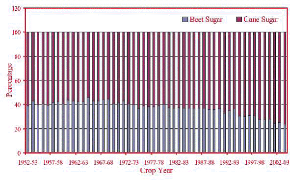

AGR 301 :: Lecture 14 :: Area, production, productivity and importance of Sugar crops and byproducts utilization (sugarcane and sugarbeet) in India and Tamil Nadu

Sugarcane is the second most important industrial crop in the country grown in over 4 million hectares. The growth of sugarcane agriculture in the country had been consistent during the past seven decades. There was increase in area, production, productivity and sugar recovery. During the period from 1930-31 to 2005-06, the area under sugarcane had gone up from 1.18 million ha to 4.24 million ha, productivity from 31 tonnes to 65.6 tonnes per hectare and total cane produced from 37 million tonnes to 323 million tonnes. Current sugar production in the country is about 20 million tonnes, while the domestic demand for sugar is about 19 million tonnes. Thus the domestic requirement for sugar is fully met by the industry, though our export share remains marginal.

Fig. 2. Percent contribution of cane and beet sugar to world production
Role of sugarcane in Indian economy
India is the fourth largest economy in the world, next to US, China and Japan. The contributions of the above four countries to the world GDP are US - 21.1%, China - 12.1%, Japan - 7% and India - 5.7%. Sugar industry is the second largest in the country after cotton textiles and contributes around 6% of the Agricultural GDP.
Indian sugar industry contributes substantially to the rural economy as the sugar mills are located in rural areas and employ rural folk to a large extent. Sugar industry by-products viz., molasses and bagasse support other industries. Molasses is the cheapest feedstock for the distilleries. The bagasse has been accepted as a viable alternative raw material to wood in the paper and pulp industry. During the recent past, Government initiatives to encourage alternate renewable sources of energy have motivated most of the sugar mills to install cogeneration plants using bagasse as fuel with highpressure boilers, efficient condensers and waste heat recovery systems. The installed capacity of cogeneration plants is around 1500 MW and the potential has been estimated to be 5000 MW.
Sugarbeet
Economic Importance
Sugar : 45% world total sugar production
Bio- fuel : 10% Ethanol blending
Economics : Rs.10,000 crores foreign exchange saving / year
Multiple uses of sugarcane based products / byproducts
S. No. |
Product / byproduct |
Uses |
1. |
Sugar |
Domestic consumption |
2. |
Molasses |
Industrial alcohol |
3. |
Bagasse |
Fuel |
4. |
Bagasse ash(fly ash) |
Chemical Industry |
5. |
Cane trash |
Manure |
6. |
Press mud |
Manure |
7. |
Cane tops |
Fodder |
8. |
Stubbles |
Fuel in rural ovens |
Multiple choice questions
- Sugarcane is the _______most important industrial crop in the country India
a. First b. Third c. Second - In India, the productivity of sugarcane is highest in the state
a. Punjab b. Karnataka c. None - The most cultivated sugar crop of the world is __________
a. Sorghum b. Sugarbeet c. Sugarcane - Sugarcane seed sets essentially have _____buds
a. 1 b. 2 c. 3 - Molasses is used for _____ preparation.
a. Alcohol b. Fuel c. Fertilizer
| Download this lecture as PDF here |